///User Experience Desginer //Software Engineer
//Researcher - I like testing new technologies
My name is Youssef, I like planning/designing/creating new technologies that helps users needs. I also focus on user satisfaction, busniess needs and deep understanding of users motivation/behavious. I like Analyzing data to understand if the solution provided is the right solution or not and if we are asking the right questions
Currently working on: Research on interactive technologies -
Medical appointment application for healthcare - Desktop Social media application for gamers
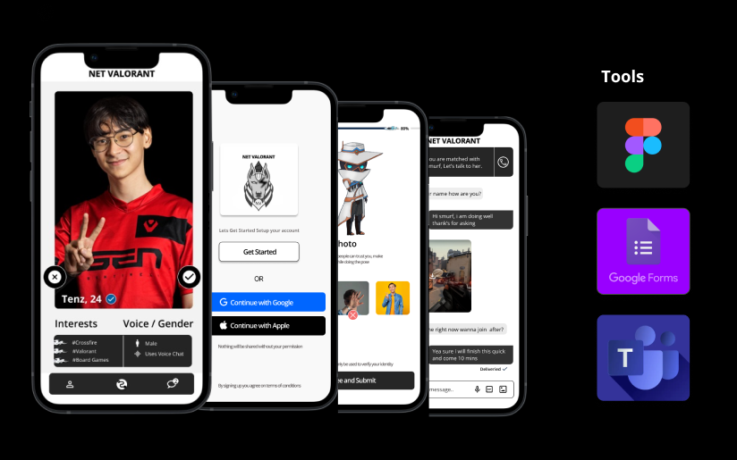
Net Valorant is a social media application that allows users to chat, connect and voice chat.
While connecting with others players you can view their profile.
User profiles contains information about stats the user have in game, gender, interests and description about themselves.
The following redesign was inspired by a product i used, the redesign fixed navigation issues to help users have better experience //The solution solved: Navigation issues, UI Design issues and New navigation buttons on Remote.
Plan: User Research, TV domain research, Competitor analysis, Survey, Flow chart on current navigation and changes, Testing the product and Finally the changes to the design/supporting evidance
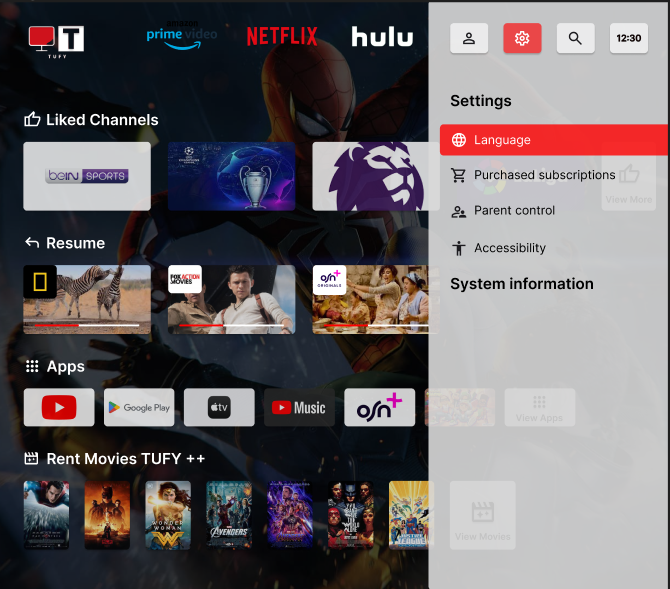
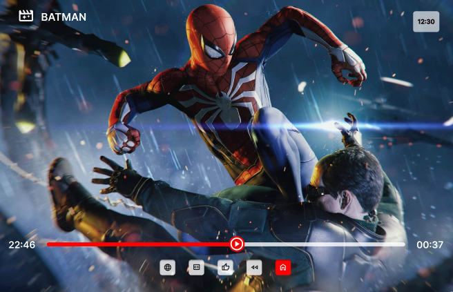
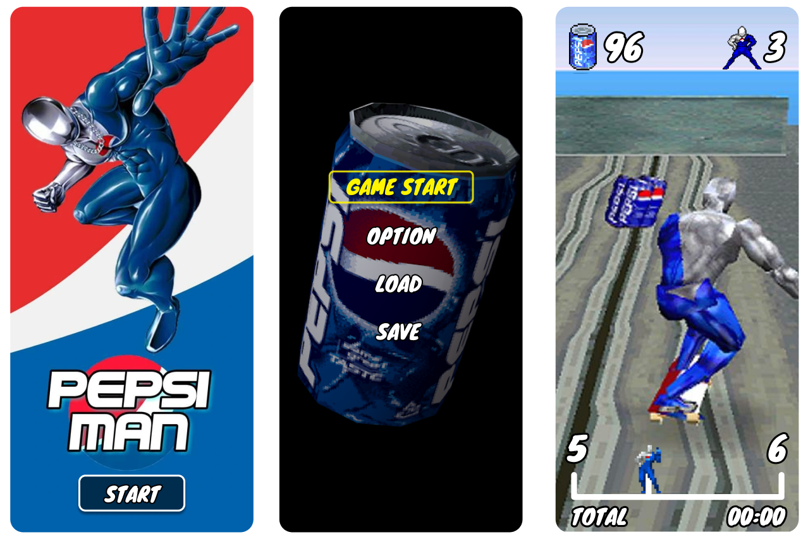
Retro gaming pepsiman, Credit goes to: Traffy_Law, Link: https://www.zedge.net/profile/77493e40-12bb-4e12-a7bb-8369fcaafe6e logo images , //I added the Button UI elements as an idea, other pictures were inspired by the game and a screen shot of pepsiman skating
UI elements added: Button / Menu / score and icons / total time / Road map for player
The following was a test design using //Figma
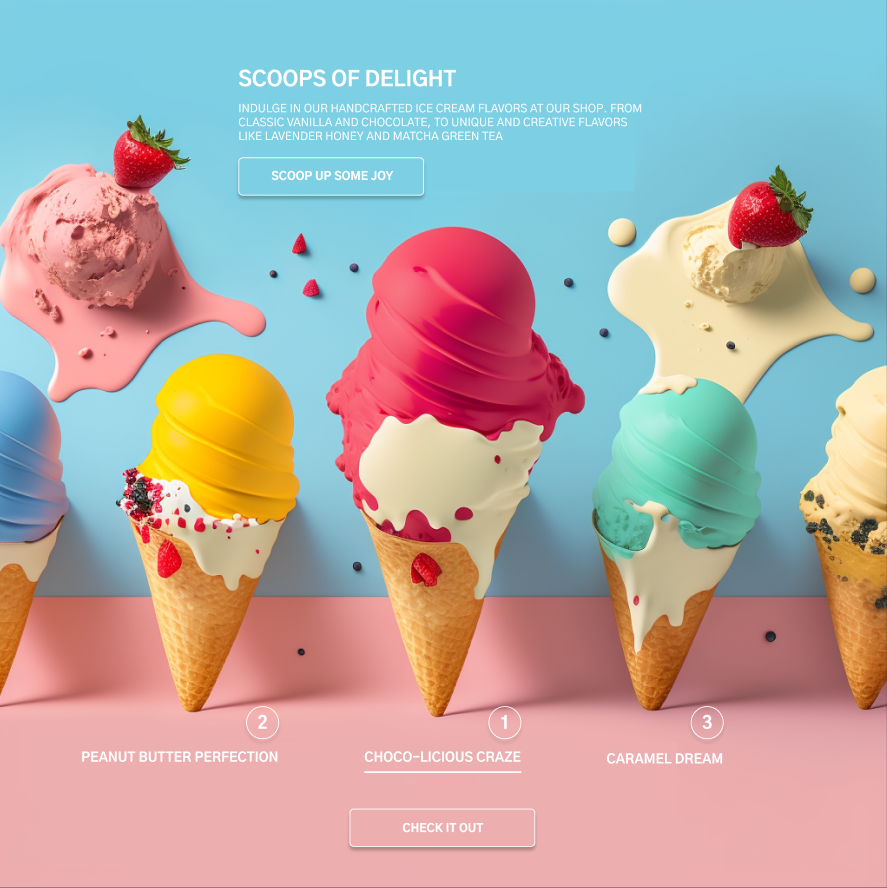
Testing ui designs using //MidJouney // ChatGpt // Figma
Testing new technologies to understand the limits of it //Example: Ice Cream landing page
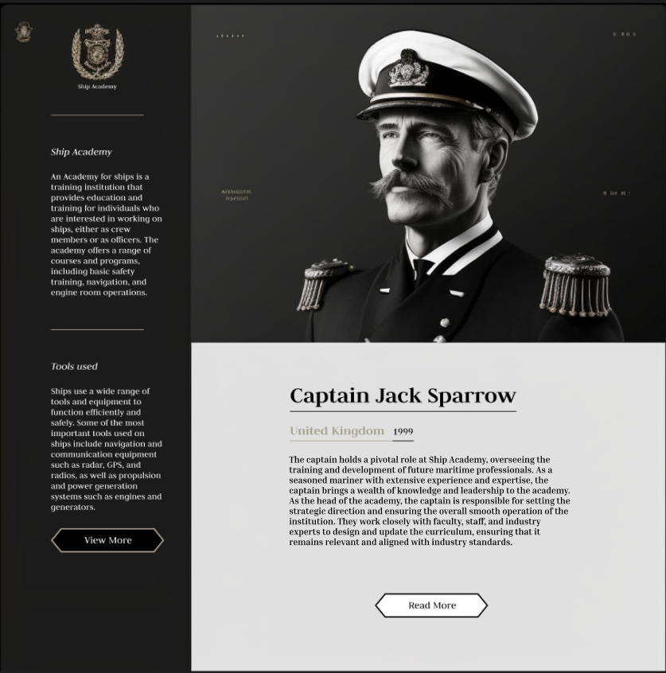
Testing ui designs using //MidJouney // ChatGpt // Figma
Using the following technologies i was able to generate text and design the following gamelike landing page for ficitional game
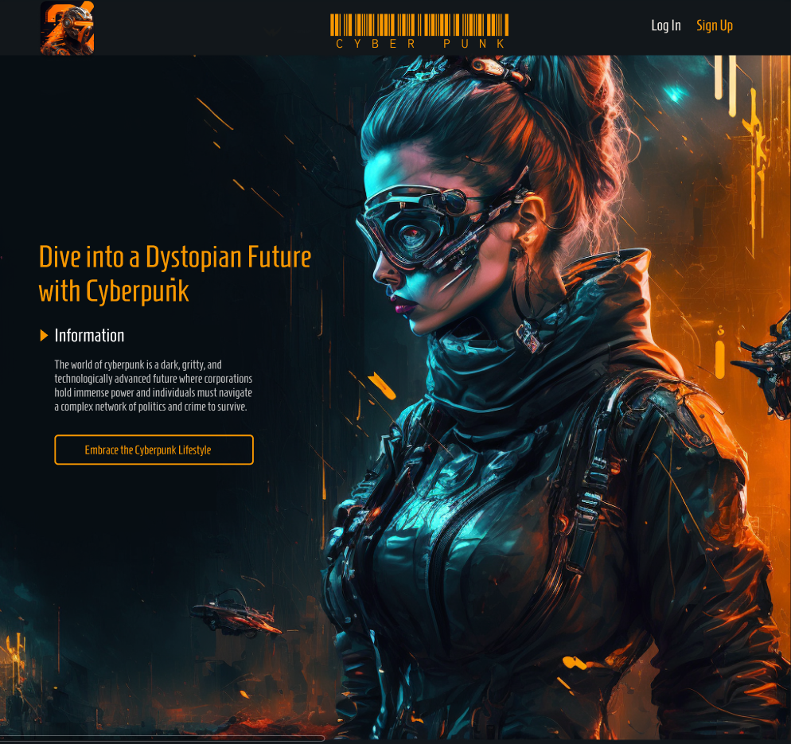
Testing ui designs using //MidJouney // ChatGpt // Figma
The following landing page was inspired by the show cyberpunk, using the following technologies i was able to create ficitional landing page
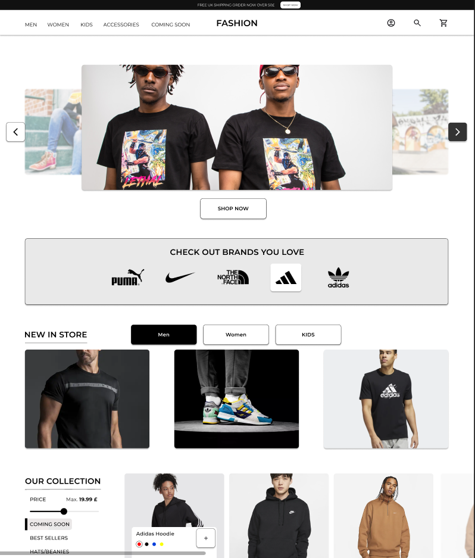
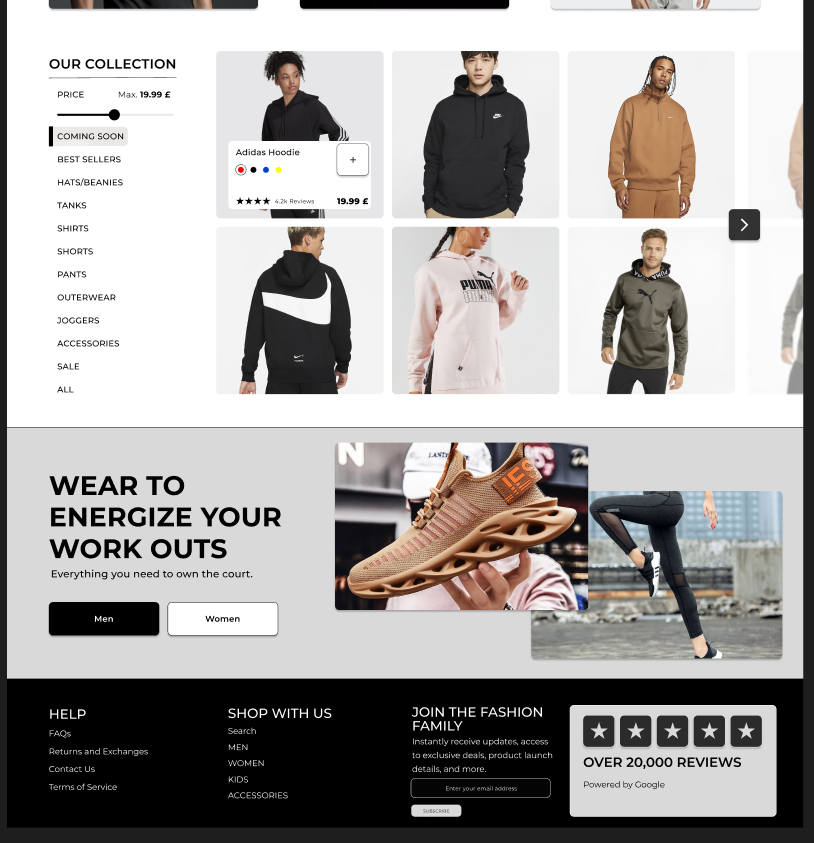
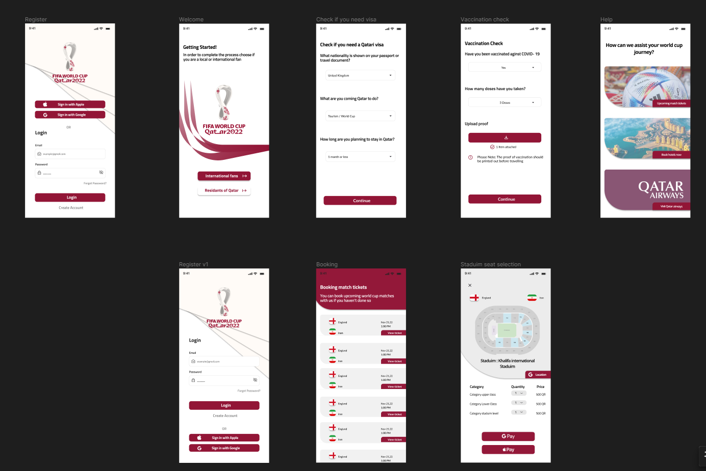
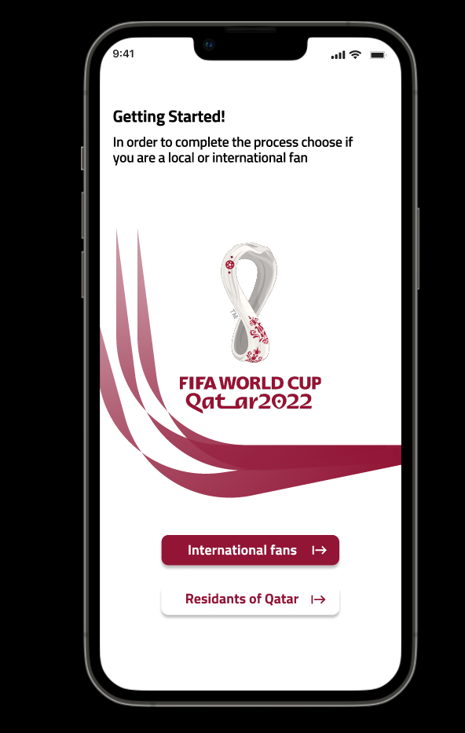

 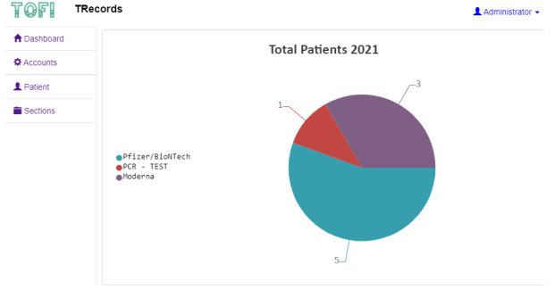
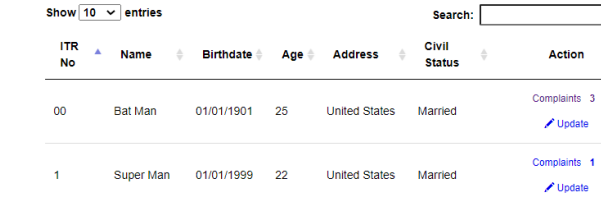
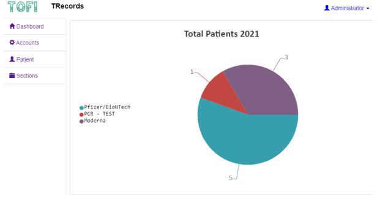
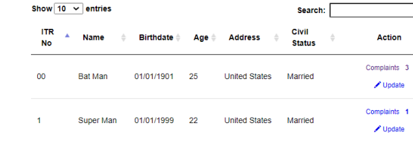
TRecords is a record management system for Covid-19 vaccination certificate forms and PCR-tests.
The following system contains pie chart which allows the admins to review how many patients have
been vaccinated with the option to utilize the data for the patient use. If the patient is in need for
vaccination certificate it can be offered using TRecords System. TRecords also offers PCR-TEST
Certificate which allows the patient to use it for travelling purposes.
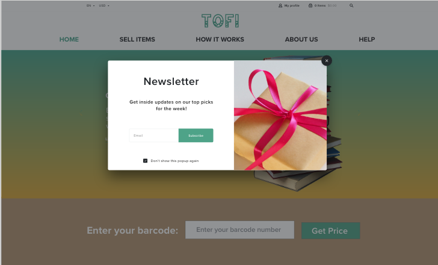
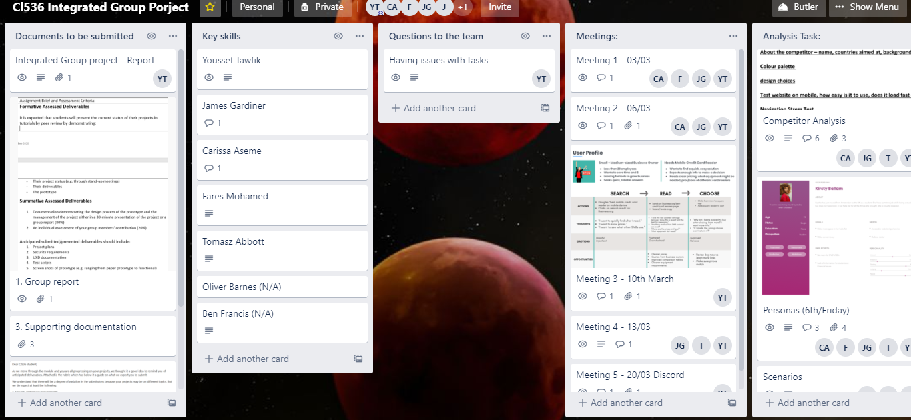
Tofi is a free online service that reads or scans barcodes on Books, CD’s, DVD’s, and games to
determine their current market value. Users input or scan their “International Standard Book
Number” or their “European Article Number” into the system to get a quote on how much the
company is willing to purchase the specific item for. It is a buy and sell company so the
business is quite cost intensive and making profits can be challenging.
Back Ground Investigation of M-Learning Blackboard, Methodology and data collection of research and Critiques on techniques used. Using three methods (Iso Metric Questionnaire, Product reaction card and SUS Score) to test three tasks given to three students. Tasks are: Accessing Assessment, Accessing Timetable and Accessing Grades.

a Haskell program that will be used to solve Sudoku, the well-known logical puzzle from Japan. Sudoku is a logic puzzle from Japan which gained popularity in the West during the 90s. Most newspapers now publish a Sudoku puzzle for the readers to solve every day.
A Sudoku puzzle consists of a 9x9 grid. Some of the cells in the grid have digits (from 1 to 9), others are blank. The objective of the puzzle is to fill in the blank cells with digits from 1 to 9, in such a way that every row, every column and every 3x3 block has exactly one occurrence of each digit 1 to 9.

Breakout game is a classic arcade game which consists of a bat, bricks and a ball they all come in different shapes, sizes and colors.
In Breakout it begins with layer of bricks in top of the screen, it can be different row of bricks depends on difficulty and the level. the goal is to destroy all the bricks. A ball moves around the screen bouncing of two sides in the screen and you try to hit it with the bat which is located at the bottom of the screen. When the player hits the brick with the ball the brick disappears, for each brick the player hits he gains 50 points. if the ball goes down to the bottom the player loses a live, each game the player has certain amount of lives usually it starts from “10 lives”. if the ball goes hits the bottom 10 times it will result in losing the game.
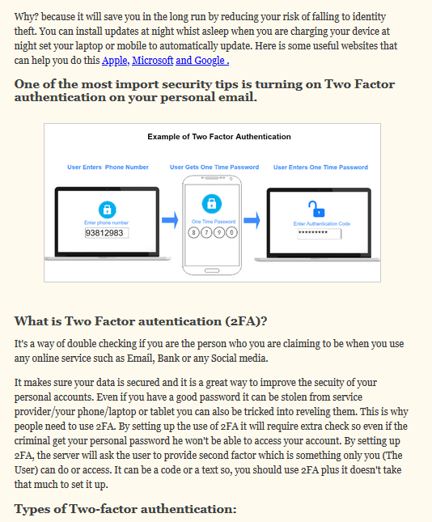
Using materials from National Cyber security website. I created a website which introduces important studies for secondary school students. The website gives information about Cyber security, network security and understanding security mechanisms.
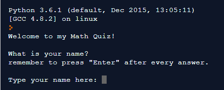
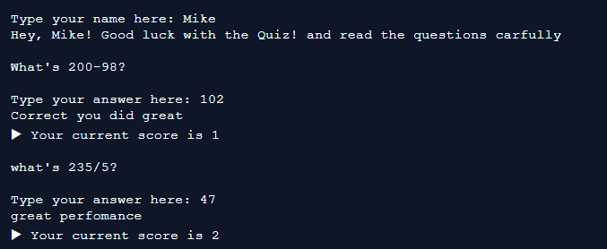
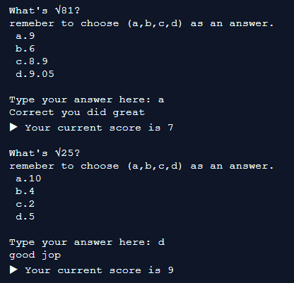
The game contains different Multiple choice questions with different comments for each time the user answers with an overall score at the end. There is also different features such as time and speed of the interaction.
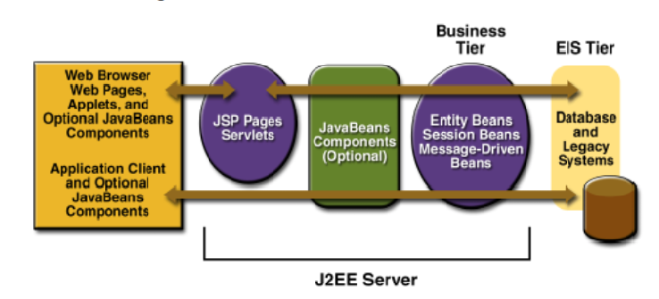
Java EE components are assembled into a JavaEEapplication. Verified to be well formed and in compliance with the J2EE specification. Deployed to production, where they are run and managed by the J2EE server. A Java EE client is a Web client or an application client.
The following is a demo demonstrating my work using Java EE container,
Java Servlets, JSP, JSP framework, Java Server faces, HTML, XHTML, Maven, XML,
Java Persistence API & Enterprise Java beans in linux terminal.
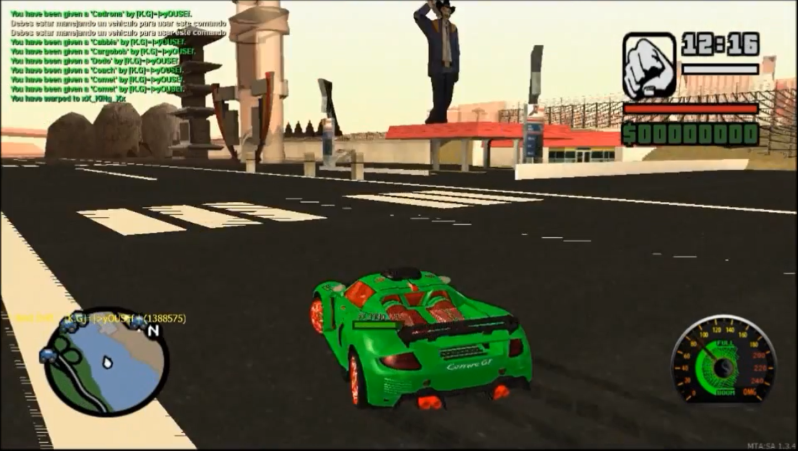
Caution: Mute the video sound
Designing the server menus, maps and adding new objects to the server such as: Cars/Maps/Events/Games/Actions for players
{kind=link}
{kind=link}
{kind=link}
{kind=link}
{kind=link}
{kind=link}
{kind=link}
{kind=link}
{kind=link}
{kind=link}
{kind=link}
{kind=link}
{kind=link}
{kind=link}
{kind=link}
{kind=link}